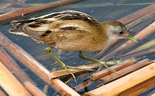
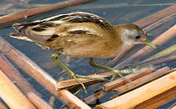

| Little Crake | |
|---|---|
|  | |
| Conservation status | |
| Binomial name | |
| Porzana parva (Scopoli, 1769) |
| Little Crake | |
|---|---|
|  | |
| Conservation status | |
| Binomial name | |
| Porzana parva (Scopoli, 1769) |
The Little Crake (Porzana parva) is a very small waterbird of the family Rallidae.
Their breeding habitat is reed beds in Europe, mainly in the east, and just into western Asia. They nest in a dry location in reed vegetation, laying 4-7 eggs. This species is migratory, wintering in Africa.
At 17–19 cm length, they are slightly smaller than Spotted Crakes, from which they are readily distinguished by the lack of dark barring and white spots on the flanks. They are more similar to Baillon's Crake.
The Little Crake has a short straight bill, yellow with a red base. Adult males have mainly brown upperparts and blue-grey face and underparts. They have green legs with long toes, and a short tail which is barred black and white underneath. Females have buff underparts, and are grey only on the face. Immature Little Crakes are similar to the female but have a white face and breast. The downy chicks are black, as with all rails.
These birds probe with their bill in mud or shallow water, also picking up food by sight. They mainly eat insects and aquatic animals.
Little Crakes are very secretive in the breeding season, and are then mostly heard rather than seen. They are then noisy birds, with a yapping kua call. They can be easier to see on migration.
The Little Crake is one of the species to which the Agreement on the Conservation of African-Eurasian Migratory Waterbirds (AEWA) applies.

{kind=link}